Mint a média legtöbb formája. A videójátékok is különböző műfajokba sorolhatóak számos különböző jellemvonás
alapján, mint a játékmenet, a célok fajtái stb. A játékok fejlődésével a műfajok is változtak az idők folyamán,
ahogy új játékstílusok jöttek létre különböző tartalmakkal. A technikai lehetőségek bővülésével az évek során a
videójátékok készítésének költségei is egyre emelkedtek, egyre életszerűbb grafikus látvánnyal, a
történetmesélés és a játékmenet komplexitásával egyre kitolva az addig hagyományossá vált műfajok határait.
Előfordul hogy eddigiektől eltérő játékok különböző műfajokat kombinálnak, mint a TPS lövöldözést autóvezetéssel,
az akciót és a szerepjátékot, egy stratégiai játékban a valós idejű stratégiát csatákban és körökre osztott
stratégiát egy világtérképen.
A műfaj megnevezésénél általában az angol rövidítését használják.
Akció
FPS
(First Person Shooter) vagy belső nézetű lövöldözős játék olyan lövöldözős videójáték, ahol
a
játékos az
általa irányított figura szemszögéből látja a játékban történteket.
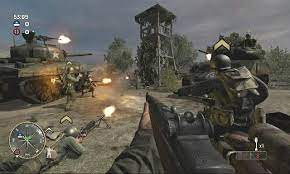
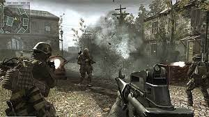
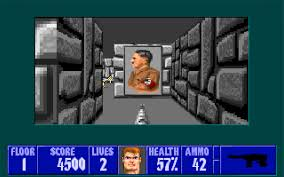
TPS
(Third-person shooter) külső nézetű lövöldözős játék, melyben az irányított karakternek
általában
fedezékről-fedezékre haladva kell leszámolnia ellenfeleivel.
az irányított hősnek különböző akadályok (gyakran ellenfelek) legyőzésével és
platformok közti ugrálással / haladással kell eljutnia a pálya végéig. Az egyes pályák során
különböző
érméket, kincseket és egyéb gyűjtögetni valókat szedhetünk össze a magasabb pontszám érdekében.
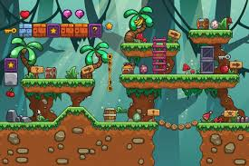
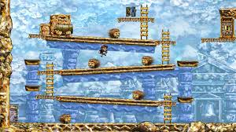
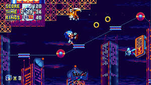
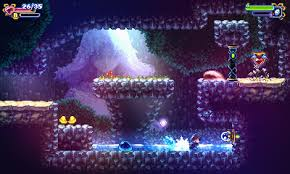
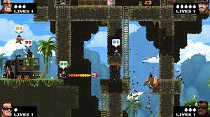
Kaland
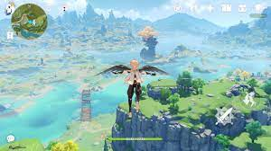
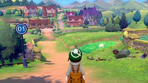
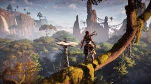
Szerepjátékok
MMORPG:
(Massively Multiplayer Online Role-Playing Game – nagyon sok szereplős online szerepjáték)
interneten,
online játszható szerepjáték. Sok ezer ember játszik egyszerre egy 2D vagy 3D világban, képességeket
fejlesztenek, szörnyek ellen harcolnak egyedül vagy többen, közben kereskednek. A lehetőségek
tárháza
végtelen, de játékonként eltérő lehet. Legismertebbek a World of Warcraft, Lineage I/II, Guild Wars,
Roblox.
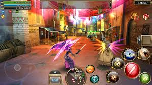
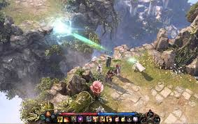
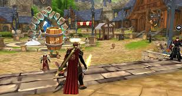
RPG:
(Role-Playing Game) Az MMORPG-hez hasonló játékelemekkel és játékmenettel rendelkezik, ám ezt
legtöbbször
egyedül játszhatjuk offline módban (Pl. The Witcher sorozat), de akad néhány olyan is, ahol pár
barátunkkal
vagy random emberrel együtt online vagy akár offline co-op módban (Pl. Diablo 3)
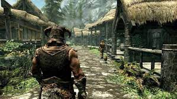
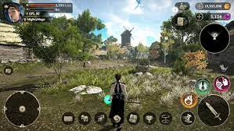
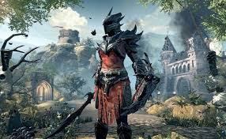
Stratégiai játékok
Valós idejű stratégia:
(real time strategy, rövidítve RTS) valós időben zajlanak, a játékmenet folyamatos, az összes
játékos
bármikor adhat ki parancsokat, amelyek végrehajtása azonnal el is kezdődik. Az átlagos RTS-ekben a
fő
feladatok az erőforrások összegyűjtése, bázisok építése, technológia fejlesztése és az egységek
irányítása.
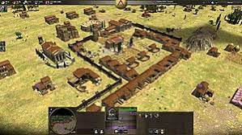
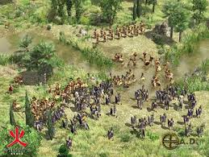
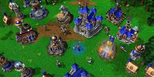
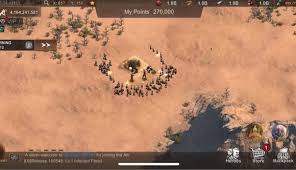
Körökre osztott stratégia:
Például: Civilization IV
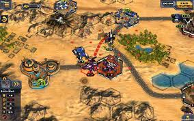
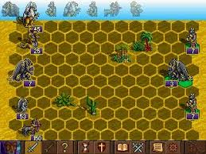
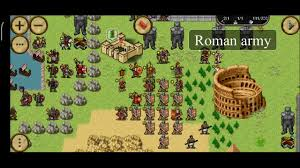
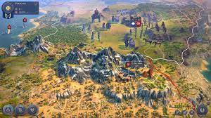
Menedzselős és szimulátor:
„Istenszimulátor”, városszimulátor: A valós idejű stratégiai játékokhoz
hasonlító játéktípus. A játékosnak egy igen részletesen kidolgozott világot (emberekkel vagy kitalált
lényekkel teli
konyhát, várost, bolygót, galaxist, kereskedelmi vállalatot stb.) kell irányítania. A fő cél nem a harc
(sokszor
ellenfelek sincsenek), hanem hogy megfelelően irányítsa az alá rendelt, általában (a stratégiai
játékoktól eltérően)
sok-sok, komplex módon összefüggő játékparaméterrel rendelkező világot, általában bizonyos, a készítők
által
meghatározott célt elérve. Korai istenszimulátornak tekinthető a Civilization, valamint a Sierra tipikus
városszimulátor sorozata (Caesar sorozat, Pharaoh), illetve a Sim City sorozat.
A hardvertechnológia csak az 1990-es évek közepére kezdte megközelíteni azt a számítási teljesítményt,
hogy egy
városnál bonyolultabb struktúrát (pl. részletesen kidolgozott fajok fejlődését egy galaxisban) is
szimulálni
lehessen PC-n. Így a 2000-es években megjelent a műfaj újabb nemzedéke vagy altípusa, amelyekben fajok
fejlődését és terjeszkedését kell irányítani (Spore). A mesterséges életszimulációs játékoknak komoly
szerepe
van az evolúcióbiológiai, matematikai és kognitív tudomány jellegű kutatásokban, bár az ott alkalmazott
szimulátorprogramok lényege nem a grafikus kidolgozottság, így nem feltétlenül tekinthetők
„videójátékoknak”. A
leghíresebb példa John Conway rendkívül egyszerű megjelenésű (sejtautomata szimuláció) és szabályokra
épülő
Életjátéka.
Logikai
(„Puzzle”)
Szimulátor:
A játékosnak virtuális eszközöket, esetleg álltatokat (kecske) vagy dolgokat (kő) kell irányítania,
amelynek azonban
létezik megfelelője a valóságban is. A hangsúly az adott dolog valós tulajdonságain, a minél hűbb
modellezésen van.
Autószimulátorok
Vasútszimulátorok
Repülőgép-szimulátorok
Tengeralattjáró-szimulátorok
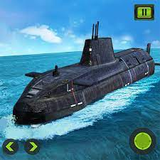
Sport
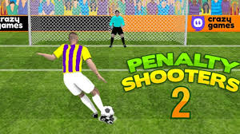
Lexikális tudás alapú
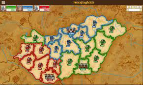
Szerencsejáték
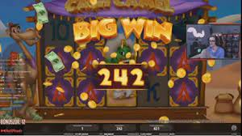
Brawl
(verekedős játékok pl.: Mortal Kombat)
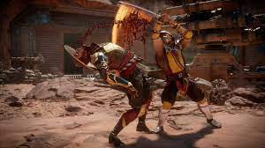
Táblajátékok:
a valóságban is játszható játékok, mint a sakk, dáma elektronikus változatai.
Lehetnek
közelvalóságszerűek, vagy speciális effektekkel attól elrugaszkodottak (pl. animált, szétmálló bábuk).

 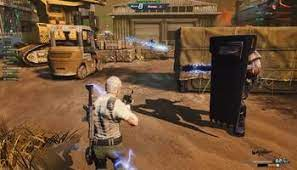
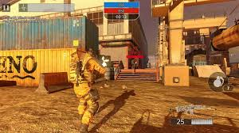
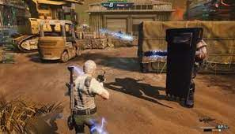
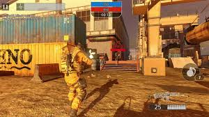
 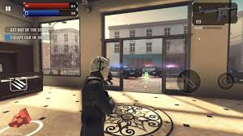
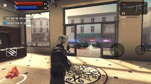
 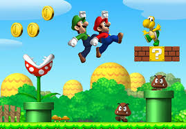
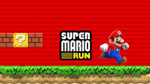
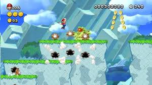
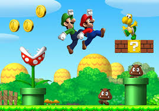
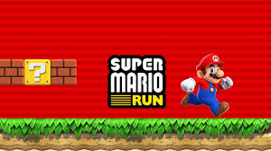
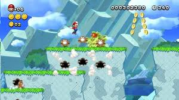
 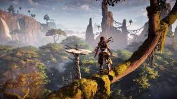
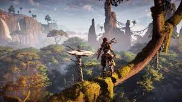
 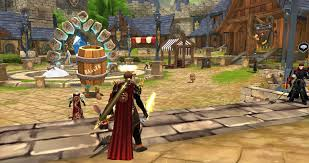
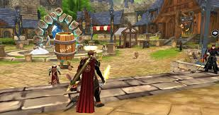